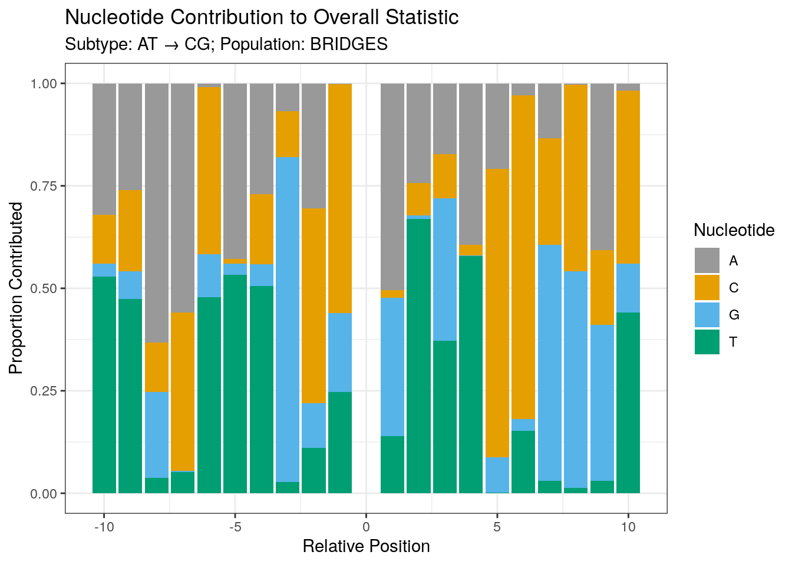
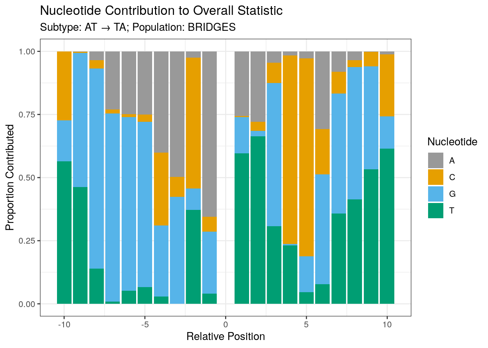
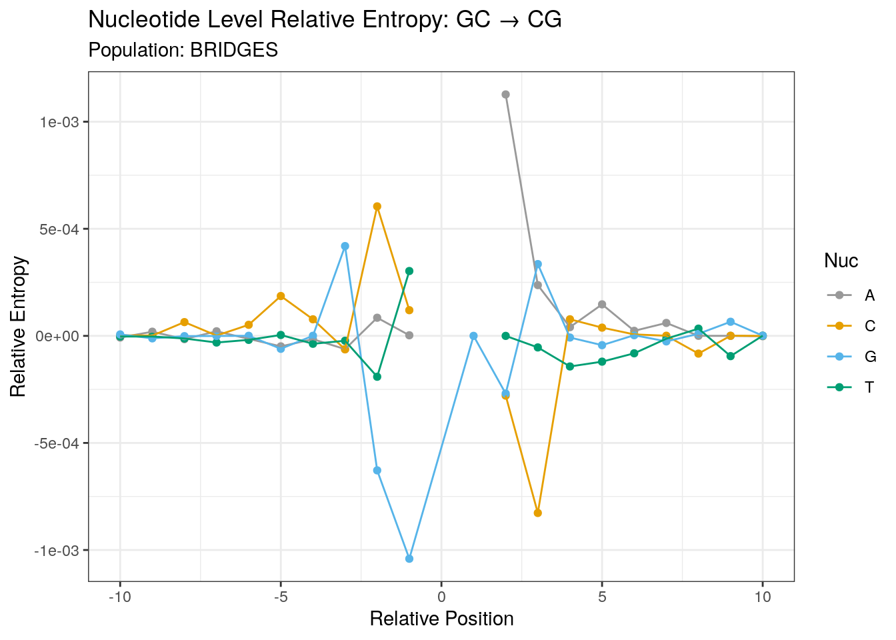

BRIDGES: Single Position Models
Andy Beck
2023-02-06
Last updated: 2023-02-06
Checks: 7 0
Knit directory: LSCI/
This reproducible R Markdown analysis was created with workflowr (version 1.7.0). The Checks tab describes the reproducibility checks that were applied when the results were created. The Past versions tab lists the development history.
Great! Since the R Markdown file has been committed to the Git repository, you know the exact version of the code that produced these results.
Great job! The global environment was empty. Objects defined in the global environment can affect the analysis in your R Markdown file in unknown ways. For reproduciblity it’s best to always run the code in an empty environment.
The command set.seed(20211101) was run prior to running
the code in the R Markdown file. Setting a seed ensures that any results
that rely on randomness, e.g. subsampling or permutations, are
reproducible.
Great job! Recording the operating system, R version, and package versions is critical for reproducibility.
Nice! There were no cached chunks for this analysis, so you can be confident that you successfully produced the results during this run.
Great job! Using relative paths to the files within your workflowr project makes it easier to run your code on other machines.
Great! You are using Git for version control. Tracking code development and connecting the code version to the results is critical for reproducibility.
The results in this page were generated with repository version 39cb5a1. See the Past versions tab to see a history of the changes made to the R Markdown and HTML files.
Note that you need to be careful to ensure that all relevant files for
the analysis have been committed to Git prior to generating the results
(you can use wflow_publish or
wflow_git_commit). workflowr only checks the R Markdown
file, but you know if there are other scripts or data files that it
depends on. Below is the status of the Git repository when the results
were generated:
Ignored files:
Ignored: .Rhistory
Ignored: .Rproj.user/
Ignored: analysis/disqus.html
Ignored: code/random/
Untracked files:
Untracked: code/count_table/
Unstaged changes:
Modified: analysis/1000G_SFS.Rmd
Modified: analysis/1000G_single_position_ALL.Rmd
Modified: analysis/1000G_summary_stats.Rmd
Modified: analysis/null_dist.Rmd
Note that any generated files, e.g. HTML, png, CSS, etc., are not included in this status report because it is ok for generated content to have uncommitted changes.
These are the previous versions of the repository in which changes were
made to the R Markdown
(analysis/BRIDGES_single_position.Rmd) and HTML
(docs/BRIDGES_single_position.html) files. If you’ve
configured a remote Git repository (see ?wflow_git_remote),
click on the hyperlinks in the table below to view the files as they
were in that past version.
| File | Version | Author | Date | Message |
|---|---|---|---|---|
| Rmd | 39cb5a1 | Andy Beck | 2023-02-06 | wflow_publish("analysis/BRIDGES_single_position.Rmd") |
| html | 9f80ac9 | Andy Beck | 2021-12-15 | Build site. |
| Rmd | b5fc652 | Andy Beck | 2021-12-15 | tikz for nucleotide plots |
| html | 21636f2 | Andy Beck | 2021-12-15 | Build site. |
| Rmd | f49f74d | Andy Beck | 2021-12-15 | tikz for nucleotide plots |
| html | 64acd0e | Andy Beck | 2021-12-15 | Build site. |
| Rmd | 2feb7db | Andy Beck | 2021-12-15 | add all cohen plot |
| html | 4e5f171 | Andy Beck | 2021-12-15 | Build site. |
| Rmd | 04aa93e | Andy Beck | 2021-12-15 | add tikz and cohen |
| html | bcee610 | Andy Beck | 2021-11-09 | update site to include disqus |
| html | 45e9d3d | Andy Beck | 2021-11-03 | Build site. |
| Rmd | a2af1c5 | Andy Beck | 2021-11-03 | 1000G+B sp models |
| html | 277edee | Andy Beck | 2021-11-02 | Build site. |
| Rmd | 203fd4a | Andy Beck | 2021-11-02 | add 18 subtype analysis |
| Rmd | 6842cad | Andy Beck | 2021-11-01 | flesh out some pages |
| html | 6842cad | Andy Beck | 2021-11-01 | flesh out some pages |
| html | bc0ed83 | Andy Beck | 2021-11-01 | Build site. |
| Rmd | 4ec43fe | Andy Beck | 2021-11-01 | Add single position document for BRIDGES |
BRIDGES Single Position Models
Introduction
Here in this document we present the results for the single position models using the singletons from the BRIDGES Consortium data. For this analysis we will only consider the collapsed mutation subtype categories.
Model Descriptions
Goodness of Fit Approach
For each singleton sub-type, we evaluate the “independent influence” of nucleotides at flanking positions up to 10 bases up or down-stream from the site of interest by modeling the observed count table
| Nucleotide | N |
|---|---|
| A | \(n_A\) |
| C | \(n_C\) |
| G | \(n_G\) |
| T | \(n_T\) |
using rates we observe nucleotides flanking the same reference allele genome-wide or in a sample of control observations sampled for each singleton. That is, for each nucleotide we compute an expected count based on the frequency observed in either the genome-wide distribution or the control sample ( $ e_{X,i} = _{X,i} n_S$ ) and use the chi-square goodness of fit statistic to assess deviance from this null model (i.e. are singletons uniformly sampled from either the genome-wide or control distribution)?
\[ \chi_i = \sum_{x \in \{A,C,G,T\} }\frac{(n_{x,i} - e_{x,i})^2}{e_{x,i}}, i \in (-10,-1),(1,10) \]
Relative Entropy
Using the expectation under the control-distribution estimated rates, we can also compute the relative entropy between our observed singleton rates and the control rates.
\[ KL(S||C) = \sum_{i \in \{A,C,G,T\}} p_i \log(\frac{p_i}{q_i}) \]
As a measure of distance, we again have the interpretation of larger = bigger difference in distributions at a flanking position. Unlike the GoF approach above, here we don’t have the problem of inflation of the statistic due to our large sample size.
Log Linear Model Approach
Following the example of Zhu et al (2017), we also construct models of the form
\[ \log(n_{ij}) = \lambda_0 + \sum_{k \in \{C,G,T\}} \lambda_j I(i=k) + \lambda_{s}I(j=s) \] where we jointly model the counts for singletons and their matched controls stratified by the nucleotides at a given flanking position in the +/- 10 bp window. Note that here the model assumes a shared nucleotide distribution between the singletons and the controls; allowing for a difference through an interaction term would yield a fully saturated model. Zhu et al (2017) use the deviance statistic to identify putative mutation motifs, which compares the above reduced model to the fully saturated model, with a larger deviance statistic resulting from a larger difference between the observed distribution of nucleotides flanking singleton and control sites from the fitted distribution based on the reduced model. The deviance statistic tends to increase due to sample size, so Zhu et al (2017) additionally divided the deviance statistic by twice the sample size to yield the relative entropy/KL divergence, which is not sensitive to sample size and allowed for comparisons between mutation sub types. We choose to take a similar approach in that we compute the KL divergence between the observed and fitted frequencies for only the singletons.
Results
Recapitulate CpG Effect
We first check to make sure that nothing has gone catastrophically wrong by ensuring that we see the known CpG effect for the C -> T subtype.
cpg_stat_by_pos("BRIDGES", df_dir) %>%
ggplot(aes(x = rp, y = re)) +
geom_point() +
geom_line() +
ggtitle("C → T: CpG Effect") +
xlab("Relative Position") +
ylab("Relative Entropy") + scale_color_manual(values = cbPalette)
f_out <- paste0(pic_dir, "ALL_CpG_effect.png")
ggsave(f_out, width = 800, height = 500, units = "px", dpi = 120)
plot_signed_re_by_pos("ALL","all_GC_AT") + scale_color_manual(values = cbPalette)
f_out <- paste0(pic_dir, "ALL_CpG_res.png")
ggsave(f_out, width = 800, height = 500, units = "px", dpi = 120)Based on the above two figures, we see the strongest influence of nucleotides at an individual position at the +1 position, and the primary driver of this statistic is an enrichment for G at this position, matching what we’d expect.
AT_CG


| Version | Author | Date |
|---|---|---|
| 4e5f171 | Andy Beck | 2021-12-15 |
| pos | statistic |
|---|---|
| -10 | 0.0000154 |
| -9 | 0.0000361 |
| -8 | 0.0000805 |
| -7 | 0.0000279 |
| -6 | 0.0000568 |
| -5 | 0.0000226 |
| -4 | 0.0001992 |
| -3 | 0.0006561 |
| -2 | 0.0001029 |
| -1 | 0.0021052 |
| 1 | 0.0002304 |
| 2 | 0.0004329 |
| 3 | 0.0002245 |
| 4 | 0.0001521 |
| 5 | 0.0000376 |
| 6 | 0.0000378 |
| 7 | 0.0000090 |
| 8 | 0.0000518 |
| 9 | 0.0000128 |
| 10 | 0.0000132 |
Here we see that the strongest influence (or deviation from expectation) occurs at the -1 relative position, and in general decreases as we move further from the focal site. Although the statistics do drop drastically as we move towards +/- 10, the unadjusted statistics are still statistically significant (chi-square null distribution with 4 - 1 = 3 degrees of freedom).
AT_GC

| Version | Author | Date |
|---|---|---|
| 4e5f171 | Andy Beck | 2021-12-15 |
| pos | statistic |
|---|---|
| -10 | 0.0000150 |
| -9 | 0.0000274 |
| -8 | 0.0000231 |
| -7 | 0.0000030 |
| -6 | 0.0000074 |
| -5 | 0.0000702 |
| -4 | 0.0000175 |
| -3 | 0.0001721 |
| -2 | 0.0050348 |
| -1 | 0.0028380 |
| 1 | 0.0102213 |
| 2 | 0.0004195 |
| 3 | 0.0006680 |
| 4 | 0.0000953 |
| 5 | 0.0000631 |
| 6 | 0.0001231 |
| 7 | 0.0001501 |
| 8 | 0.0000123 |
| 9 | 0.0000187 |
| 10 | 0.0000186 |
Here for the AT_GC transition we see a similar pattern to what we observed above, but with the most influential marginal effect occurring at the +1 position.
AT_TA


| Version | Author | Date |
|---|---|---|
| 4e5f171 | Andy Beck | 2021-12-15 |

| pos | statistic |
|---|---|
| -10 | 0.0000160 |
| -9 | 0.0000138 |
| -8 | 0.0000220 |
| -7 | 0.0000272 |
| -6 | 0.0000451 |
| -5 | 0.0001038 |
| -4 | 0.0001892 |
| -3 | 0.0000974 |
| -2 | 0.0004760 |
| -1 | 0.0013461 |
| 1 | 0.0042639 |
| 2 | 0.0005759 |
| 3 | 0.0003432 |
| 4 | 0.0001018 |
| 5 | 0.0001498 |
| 6 | 0.0000526 |
| 7 | 0.0000953 |
| 8 | 0.0000711 |
| 9 | 0.0000271 |
| 10 | 0.0000293 |
Here for the A>T(T>A) transversion we see that the signal at the +1 is far greater than what we observe at other relative positions. This is in contrast to what we observed above where marginal signals at multiple relative positions (generally the +/- 1 positions) stood out. Otherwise we again see the same trend of statistics drastically decreasing as we move further up or down stream.
GC_AT

Warning: Removed 4 rows containing missing values (position_stack).
| Version | Author | Date |
|---|---|---|
| 4e5f171 | Andy Beck | 2021-12-15 |
Warning: Removed 4 rows containing missing values (position_stack).Warning: Removed 1 rows containing missing values (geom_point).Warning: Removed 1 rows containing missing values (geom_point).| pos | statistic |
|---|---|
| -10 | 0.0000019 |
| -9 | 0.0000061 |
| -8 | 0.0000033 |
| -7 | 0.0000123 |
| -6 | 0.0000094 |
| -5 | 0.0000427 |
| -4 | 0.0000405 |
| -3 | 0.0000480 |
| -2 | 0.0003494 |
| -1 | 0.0015001 |
| 1 | 0.0005669 |
| 2 | 0.0010424 |
| 3 | 0.0003306 |
| 4 | 0.0001281 |
| 5 | 0.0000787 |
| 6 | 0.0000471 |
| 7 | 0.0000550 |
| 8 | 0.0000559 |
| 9 | 0.0000498 |
| 10 | 0.0000638 |
Here we look at the G>A (C>T) transition, conditioning on sites not being CpGs (note: due to this the degrees of freedom for the test statistic at the +1 position is 2 instead of 3). Here we see that, with the exception of the -1 position, the control distribution-based statistic is greater than what we observe with the genome-wide-based statistic.
all_GC_AT

| Version | Author | Date |
|---|---|---|
| 4e5f171 | Andy Beck | 2021-12-15 |

| Version | Author | Date |
|---|---|---|
| 4e5f171 | Andy Beck | 2021-12-15 |
| pos | statistic |
|---|---|
| -10 | 0.0071607 |
| -9 | 0.0074631 |
| -8 | 0.0071729 |
| -7 | 0.0075681 |
| -6 | 0.0074302 |
| -5 | 0.0078007 |
| -4 | 0.0074517 |
| -3 | 0.0072150 |
| -2 | 0.0084375 |
| -1 | 0.0092402 |
| 1 | 0.0686895 |
| 2 | 0.0086806 |
| 3 | 0.0082090 |
| 4 | 0.0070446 |
| 5 | 0.0073267 |
| 6 | 0.0073435 |
| 7 | 0.0072784 |
| 8 | 0.0071958 |
| 9 | 0.0072389 |
| 10 | 0.0073043 |
cpg_GC_AT

| pos | statistic |
|---|---|
| -10 | 0.0000257 |
| -9 | 0.0000237 |
| -8 | 0.0000359 |
| -7 | 0.0000138 |
| -6 | 0.0000494 |
| -5 | 0.0000526 |
| -4 | 0.0000804 |
| -3 | 0.0000122 |
| -2 | 0.0002493 |
| -1 | 0.0010981 |
| 2 | 0.0007948 |
| 3 | 0.0002257 |
| 4 | 0.0000388 |
| 5 | 0.0000769 |
| 6 | 0.0000580 |
| 7 | 0.0000545 |
| 8 | 0.0000048 |
| 9 | 0.0000351 |
| 10 | 0.0000198 |
Here we condition on the +1 being a G for the G>A(C>T) transition.
GC_TA
Warning: Removed 4 rows containing missing values (position_stack).
Warning: Removed 4 rows containing missing values (position_stack).Warning: Removed 1 rows containing missing values (geom_point).Warning: Removed 1 rows containing missing values (geom_point).| pos | statistic |
|---|---|
| -10 | 0.0000327 |
| -9 | 0.0000384 |
| -8 | 0.0000815 |
| -7 | 0.0000343 |
| -6 | 0.0000150 |
| -5 | 0.0003774 |
| -4 | 0.0006349 |
| -3 | 0.0010416 |
| -2 | 0.0018200 |
| -1 | 0.0014435 |
| 1 | 0.0034344 |
| 2 | 0.0011996 |
| 3 | 0.0004024 |
| 4 | 0.0002396 |
| 5 | 0.0000755 |
| 6 | 0.0000083 |
| 7 | 0.0000146 |
| 8 | 0.0000134 |
| 9 | 0.0000064 |
| 10 | 0.0000349 |
For the G>T(C>A) transversion at non-CpG sites we see that the largest marginal effect for the control-rate models appears at the +1 position, with the -1 position also appearing to be influential as well.
cpg_GC_TA

Warning: Removed 4 rows containing missing values (position_stack).
Warning: Removed 4 rows containing missing values (position_stack).Warning: Removed 3 rows containing missing values (geom_point).Warning: Removed 3 rows containing missing values (geom_point).| pos | statistic |
|---|---|
| -10 | 0.0000217 |
| -9 | 0.0001689 |
| -8 | 0.0001394 |
| -7 | 0.0001554 |
| -6 | 0.0000240 |
| -5 | 0.0012588 |
| -4 | 0.0012971 |
| -3 | 0.0003829 |
| -2 | 0.0013968 |
| -1 | 0.0040317 |
| 2 | 0.0000104 |
| 3 | 0.0000445 |
| 4 | 0.0002165 |
| 5 | 0.0000560 |
| 6 | 0.0004583 |
| 7 | 0.0002596 |
| 8 | 0.0000957 |
| 9 | 0.0000611 |
| 10 | 0.0000213 |
When we condition on the site being a CpG, we see that the largest marginal influence appears at the -1 site, with a modest signal at the -4 and -5 positions as well.
GC_CG
Warning: Removed 4 rows containing missing values (position_stack).
Warning: Removed 4 rows containing missing values (position_stack).Warning: Removed 1 rows containing missing values (geom_point).Warning: Removed 1 rows containing missing values (geom_point).| pos | statistic |
|---|---|
| -10 | 0.0000063 |
| -9 | 0.0000109 |
| -8 | 0.0000298 |
| -7 | 0.0000409 |
| -6 | 0.0000887 |
| -5 | 0.0001777 |
| -4 | 0.0003047 |
| -3 | 0.0004258 |
| -2 | 0.0028846 |
| -1 | 0.0008699 |
| 1 | 0.0018142 |
| 2 | 0.0007192 |
| 3 | 0.0006685 |
| 4 | 0.0001063 |
| 5 | 0.0002830 |
| 6 | 0.0001180 |
| 7 | 0.0000420 |
| 8 | 0.0000104 |
| 9 | 0.0000431 |
| 10 | 0.0000134 |
For the G<->C transversion at non-CpG sites we observe the largest marginal signal occurring at the -1 position.
cpg_GC_CG

Warning: Removed 4 rows containing missing values (position_stack).
Warning: Removed 4 rows containing missing values (position_stack).Warning: Removed 3 rows containing missing values (geom_point).
Warning: Removed 3 rows containing missing values (geom_point).| pos | statistic |
|---|---|
| -10 | 0.0000203 |
| -9 | 0.0000354 |
| -8 | 0.0000929 |
| -7 | 0.0000542 |
| -6 | 0.0000848 |
| -5 | 0.0002996 |
| -4 | 0.0001303 |
| -3 | 0.0005670 |
| -2 | 0.0015082 |
| -1 | 0.0014661 |
| 2 | 0.0016761 |
| 3 | 0.0014532 |
| 4 | 0.0002689 |
| 5 | 0.0003494 |
| 6 | 0.0001148 |
| 7 | 0.0001002 |
| 8 | 0.0001264 |
| 9 | 0.0001611 |
| 10 | 0.0000034 |
When we condition on the C<->G transversion being at a CpG site, we notice that the strongest marginal effect appears at the +2 position for both models, with sharp declines as we move away from +/- 3 bp.
sessionInfo()R version 4.2.2 Patched (2022-11-10 r83330)
Platform: x86_64-pc-linux-gnu (64-bit)
Running under: Ubuntu 18.04.6 LTS
Matrix products: default
BLAS: /usr/lib/x86_64-linux-gnu/openblas/libblas.so.3
LAPACK: /usr/lib/x86_64-linux-gnu/libopenblasp-r0.2.20.so
locale:
[1] LC_CTYPE=en_US.UTF-8 LC_NUMERIC=C
[3] LC_TIME=en_US.UTF-8 LC_COLLATE=en_US.UTF-8
[5] LC_MONETARY=en_US.UTF-8 LC_MESSAGES=en_US.UTF-8
[7] LC_PAPER=en_US.UTF-8 LC_NAME=C
[9] LC_ADDRESS=C LC_TELEPHONE=C
[11] LC_MEASUREMENT=en_US.UTF-8 LC_IDENTIFICATION=C
attached base packages:
[1] stats graphics grDevices utils datasets methods base
other attached packages:
[1] sjPlot_2.8.11 tikzDevice_0.12.3.1 forcats_0.5.1
[4] stringr_1.4.0 dplyr_1.0.9 purrr_0.3.4
[7] readr_2.1.2 tidyr_1.2.0 tibble_3.1.8
[10] ggplot2_3.3.6 tidyverse_1.3.2 workflowr_1.7.0
loaded via a namespace (and not attached):
[1] TH.data_1.1-1 googledrive_2.0.0 minqa_1.2.4
[4] colorspace_2.0-3 ellipsis_0.3.2 sjlabelled_1.2.0
[7] rprojroot_2.0.3 estimability_1.4.1 parameters_0.18.1
[10] fs_1.5.2 rstudioapi_0.13 farver_2.1.0
[13] bit64_4.0.5 fansi_1.0.3 mvtnorm_1.1-3
[16] lubridate_1.8.0 xml2_1.3.3 codetools_0.2-18
[19] splines_4.2.2 knitr_1.40 sjmisc_2.8.9
[22] jsonlite_1.8.0 nloptr_2.0.3 ggeffects_1.1.3
[25] broom_1.0.0 dbplyr_2.1.1 effectsize_0.7.0.5
[28] compiler_4.2.2 httr_1.4.3 sjstats_0.18.1
[31] emmeans_1.8.1-1 backports_1.4.1 assertthat_0.2.1
[34] Matrix_1.4-1 fastmap_1.1.0 gargle_1.2.0
[37] cli_3.3.0 later_1.3.0 htmltools_0.5.2
[40] tools_4.2.2 coda_0.19-4 gtable_0.3.0
[43] glue_1.6.2 Rcpp_1.0.8.3 cellranger_1.1.0
[46] jquerylib_0.1.4 vctrs_0.4.1 filehash_2.4-3
[49] nlme_3.1-157 insight_0.18.4 xfun_0.31
[52] ps_1.7.0 lme4_1.1-30 rvest_1.0.2
[55] lifecycle_1.0.1 googlesheets4_1.0.0 getPass_0.2-2
[58] MASS_7.3-58.1 zoo_1.8-10 scales_1.2.0
[61] vroom_1.5.7 ragg_1.2.2 hms_1.1.1
[64] promises_1.2.0.1 parallel_4.2.2 sandwich_3.0-1
[67] yaml_2.3.5 sass_0.4.1 stringi_1.7.6
[70] highr_0.9 bayestestR_0.12.1 boot_1.3-28
[73] systemfonts_1.0.4 rlang_1.0.4 pkgconfig_2.0.3
[76] evaluate_0.15 lattice_0.20-45 labeling_0.4.2
[79] bit_4.0.4 processx_3.5.3 tidyselect_1.1.2
[82] magrittr_2.0.3 R6_2.5.1 generics_0.1.3
[85] multcomp_1.4-19 DBI_1.1.2 pillar_1.7.0
[88] haven_2.5.0 whisker_0.4 withr_2.5.0
[91] survival_3.3-1 datawizard_0.6.2 performance_0.10.0
[94] modelr_0.1.8 crayon_1.5.1 utf8_1.2.2
[97] tzdb_0.3.0 rmarkdown_2.14 grid_4.2.2
[100] readxl_1.4.0 callr_3.7.0 git2r_0.30.1
[103] reprex_2.0.1 digest_0.6.29 xtable_1.8-4
[106] httpuv_1.6.5 textshaping_0.3.6 munsell_0.5.0
[109] bslib_0.3.1